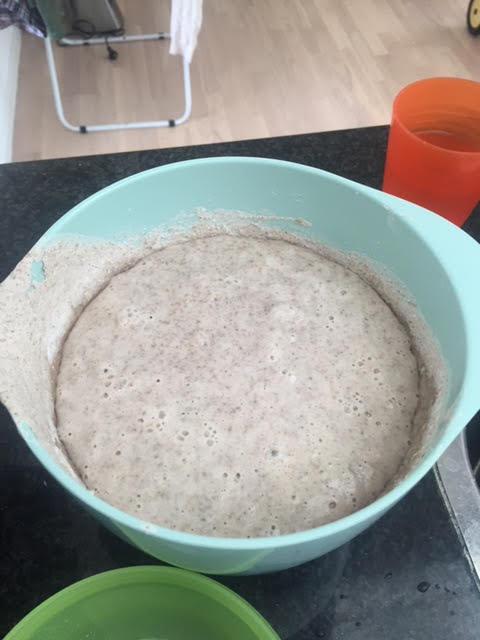
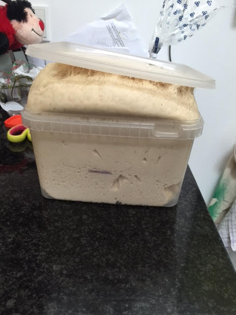
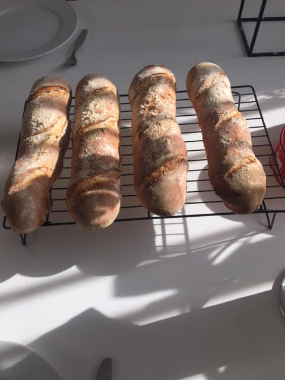

My home is Aarhus, Denmark.
Sourdough is one of the oldest ways to make bread rise before baking it. Sourdough consist of naturally-orccuring lactobacilli and yeast. Bread made with sourdough takes a bit longer to make than a bread make with yeast. But the result is a far better tasting bread

As your bread dough rises it improves flavor and texture. The sourdough ferments the sugar and develops the dough.

Bake your bread at as high a temperature as possible. I always use 250-270 degrees (482-518 F). If you throw a glass of water in the bottom of the oven, the bread will get a very crispy crust.
